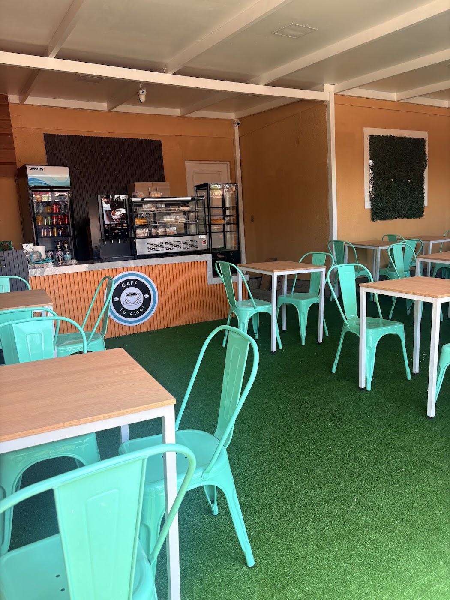
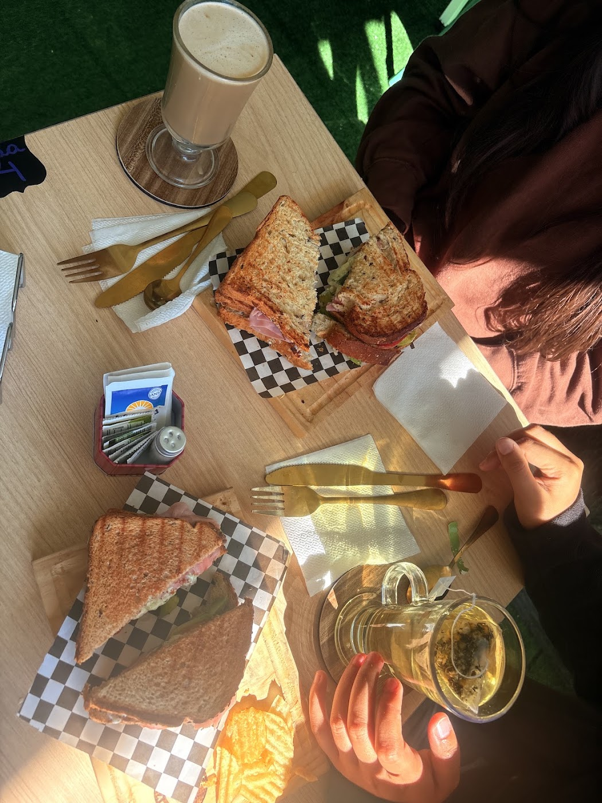
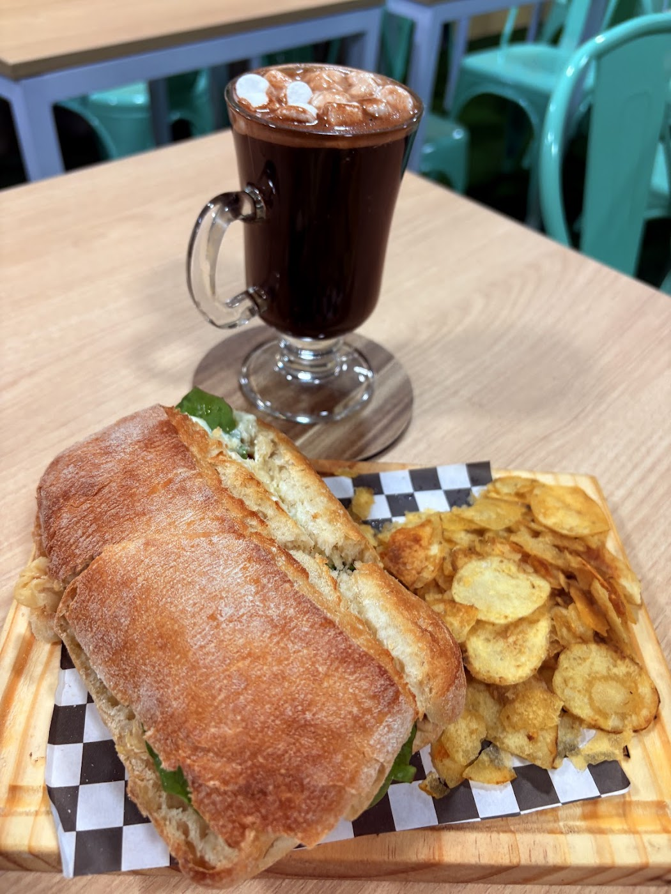
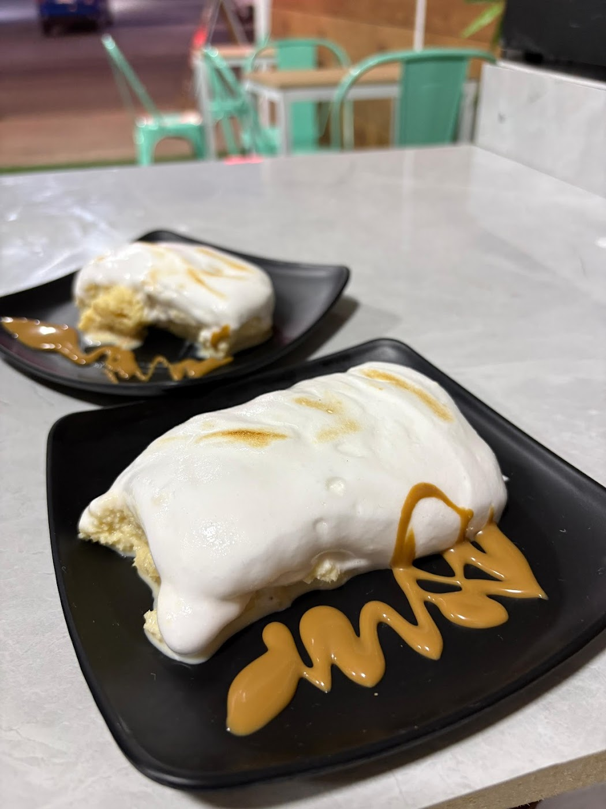

Atención que se nota
"La atención maravillosa", "todo excelente, la atención, la limpieza" — es lo que más repiten sus reseñas reales.

Cafetería familiar · Padre Hurtado
Una cafetería de barrio en El Trébol 1583, hecha por una familia. Para sentarse, para llevar, o para que te la lleven.
El propio dueño lo contó respondiendo una reseña: el local es nuevo y lo están sacando adelante en familia, trabajando juntos para mejorar.
"La atención maravillosa", "todo excelente, la atención, la limpieza" — es lo que más repiten sus reseñas reales.
"La comida exquisita, sobre todo la salsa de ajo. ¡Creo que he comido de todo!", dice una clienta frecuente.
Consumo en el lugar, para llevar y despacho a domicilio — los tres servicios están confirmados en su ficha de Google.
Café Tu amor abrió hace cerca de diez meses en El Trébol, Padre Hurtado. Sillas turquesa, mesas de madera clara y pasto sintético en el piso, en un salón amplio pensado para sentarse con calma.
Es un proyecto familiar: cuando un cliente les dejó una reseña con sugerencias, respondieron agradeciendo y contando que el negocio recién partía y que estaban trabajando juntos para mejorar. Se nota que leen y contestan todo lo que les escriben.



Arma tu pedido y consúltanos. Según el dato que Google recoge de 10 clientes, el gasto promedio va entre $5.000 y $10.000 por persona.
"Soy cliente frecuente de esta cafetería. He ido con amigos y familia y siempre ha estado excelente. La atención maravillosa y la comida exquisita, sobre todo la salsa de ajo. ¡Creo que he comido de todo! Me encanta."
"Fui con mi hijo y todo excelente: la atención, la limpieza, los productos que ofrecen, todo muy rico y variado. Los recomiendo ampliamente."
"Hemos visitado esta cafetería en dos oportunidades con mi esposa, siempre con buena disposición y ánimo de pasar un momento agradable. Valoramos el esfuerzo familiar que hay detrás de este lugar."
El Trébol 1583
Padre Hurtado, Región Metropolitana
—
Horario completo por confirmar con el local.